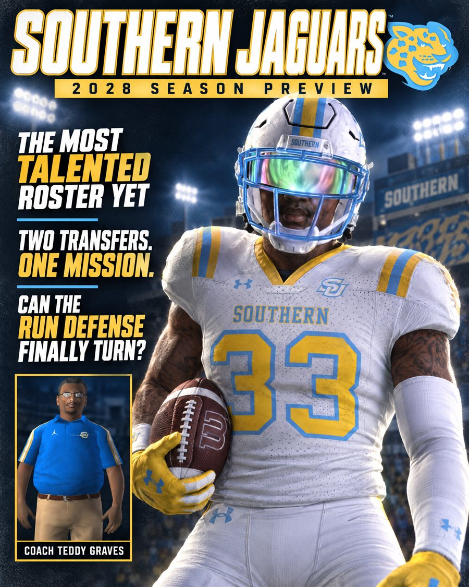
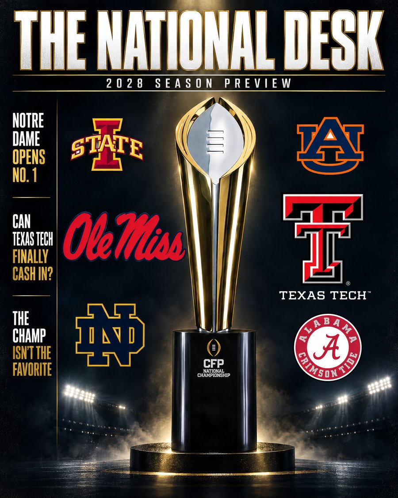

Now Out
Week 2: vs North Texas
Southern is 2-0 after wins over Kentucky and North Texas. The episode's live on the channel, and the season check-in is updated through this week, kept spoiler-free until the next one drops.

Program
Meet The Coach: Teddy Graves
Eleven years as somebody else's assistant, two head-job interviews that went nowhere, and the program that finally handed him the keys — his road to Southern.

2028 Season Preview
The Most Talented Roster Yet
Two headline transfers, a defense built to finally turn, and a coach who's seen every version of this program try to break through before. The full preview, schedule, and a prediction for every game.
2025-2027 Historical Recap
Three years, three different ceilings — 5-7 to 8-6 to 6-6, a program still looking for its breakout. Fully spoiled, safe to binge start to finish.
In true chronological order. Blue tiles are everything still unfolding (previews, predictions, weekly coverage).

2028 Season Preview
Can Texas Tech Finally Cash In?
Notre Dame opens No. 1, Ole Miss defends the title without being the favorite, and a three-peat Big 12 champion is this desk's pick to finally win it all. The full preseason Top 25, the hot seat board, the Heisman watch, and every pick on the board.
2025-2027 Historical Recap
Notre Dame's title, Texas's blowout, and the bracket that broke the model — three very different champions in three years. Fully spoiled, safe to binge start to finish.
In true chronological order. Blue tiles are everything still unfolding (previews, predictions, deep dives).
2028 Season Preview
Notre Dame opens No. 1 — but the ratings don't agree. The full preseason Top 25, the hot seat board, the Heisman watch, and every pick, backed by every year on record.
2028 Check-In
Preseason No. 1 Notre Dame is already 0-2 — and two of the five preseason Heisman names still don't have a result to their name. Updated as the real season gives us something to measure.